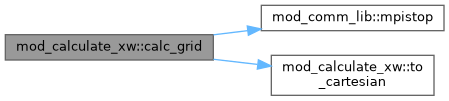

Handles computations for coordinates and variables in output. More...
Functions/Subroutines | |
| subroutine | calc_grid (qunit, igrid, xc, xcc, xc_tmp, xcc_tmp, wc_tmp, wcc_tmp, normconv, ixcl, ixccl, first) |
| Compute both corner as well as cell-centered values for output. | |
| subroutine | to_cartesian (x_tmp, w_tmp, ixl, xc, wc) |
| convert to cartesian coordinates and vector components | |
| subroutine | getheadernames (wnamei, xandwnamei, outfilehead) |
| get all variables names | |
| subroutine | calc_x (igrid, xc, xcc) |
| computes cell corner (xC) and cell center (xCC) coordinates | |
Detailed Description
Handles computations for coordinates and variables in output.
Function/Subroutine Documentation
◆ calc_grid()
| subroutine mod_calculate_xw::calc_grid | ( | integer, intent(in) | qunit, |
| integer, intent(in) | igrid, | ||
| double precision, dimension(ixmlo^d-1:ixmhi^d,ndim), intent(in) | xc, | ||
| double precision, dimension(ixmlo^d:ixmhi^d,ndim), intent(in) | xcc, | ||
| double precision, dimension(ixmlo^d-1:ixmhi^d,ndim) | xc_tmp, | ||
| double precision, dimension(ixmlo^d:ixmhi^d,ndim) | xcc_tmp, | ||
| double precision, dimension(ixmlo^d-1:ixmhi^d,nw+nwauxio) | wc_tmp, | ||
| double precision, dimension(ixmlo^d:ixmhi^d,nw+nwauxio) | wcc_tmp, | ||
| double precision, dimension(0:nw+nwauxio), intent(out) | normconv, | ||
| integer | ixc, | ||
| integer | l, | ||
| integer | ixcc, | ||
| l, | |||
| logical, intent(in) | first | ||
| ) |
Compute both corner as well as cell-centered values for output.
Definition at line 8 of file mod_calculate_xw.t.
Here is the call graph for this function:

◆ calc_x()
| subroutine mod_calculate_xw::calc_x | ( | integer, intent(in) | igrid, |
| double precision, dimension(ixmlo^d-1:ixmhi^d,ndim), intent(out) | xc, | ||
| double precision, dimension(ixmlo^d:ixmhi^d,ndim), intent(out) | xcc | ||
| ) |
computes cell corner (xC) and cell center (xCC) coordinates
Definition at line 419 of file mod_calculate_xw.t.
◆ getheadernames()
| subroutine mod_calculate_xw::getheadernames | ( | character(len=name_len), dimension(1:nw+nwauxio) | wnamei, |
| character(len=name_len), dimension(1:ndim+nw+nwauxio) | xandwnamei, | ||
| character(len=1024) | outfilehead | ||
| ) |
get all variables names
Definition at line 293 of file mod_calculate_xw.t.
Here is the call graph for this function:

◆ to_cartesian()
| subroutine mod_calculate_xw::to_cartesian | ( | double precision, dimension(ix^s,ndim) | x_tmp, |
| double precision, dimension(ix^s,nw+nwauxio) | w_tmp, | ||
| integer | ix, | ||
| integer | l, | ||
| double precision, dimension(ix^s,ndim) | xc, | ||
| double precision, dimension(ix^s,nw+nwauxio) | wc | ||
| ) |
convert to cartesian coordinates and vector components
Definition at line 154 of file mod_calculate_xw.t.